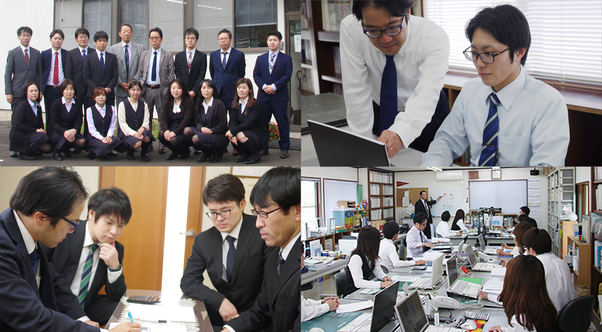

開業以来四十有余年、長野県上田市にて中小企業の皆様とともに歩み続けてまいりました。会計監査・税務申告はもちろん、経営分析・資金繰り・事業承継まで、高付加価値なサービスで経営基盤の強化をご支援します。
所長挨拶と事務所概要
中小企業の皆様に於かれましては、コロナ禍の真っ只中益々ご健闘されている事とご推察申し上げます。
私共事務所も開業四十五年を迎えましたが、この四十五年という歳月の中で、今まで各企業の多岐に渡る諸問題を解決して参りました。
そんな経験から、私の理念と致しまして「ゴーイングコンサーン」「企業は、起業した以上、継続させなければならない」という結論に達しました。
我々は、まず企業の継続を第一前提とし、その基礎の上に企業の発展に寄与する事を、基本コンセプトとして考えております。
その為に、全所員挙げて厳しい研修を積んでいるのはもちろんの事、実務ではコンピューター、ITをフル活用する事で、各企業の細部にわたる経営分析を行うとともに、実務の効率化を図り、新たに生み出される時間を各顧問先様のニーズに応えるべく、高付加価値なサービスを提供する事により、まず経営基盤を強化し将来に向けた投資計画を立て実現する。
この構想の実践により、各顧問先の生産性、収益性を格段に向上させる事を実現して参りました。
当事務所も開業以来、四十有余年、顧問先の皆様とともに歩み続け、その間私共が絶えず考え続けてきた事、それは各企業の皆様の将来設計でございます。将来に向けて発展成長する力強い企業を創り上げていく為のお力になれる事を確約し私の挨拶とさせて頂きます。
【 職 歴 】
【 資 格 】

通常業務から経営支援・その他事業まで、中小企業経営の総合的なサポート
当事務所は、月一度の巡回監査を基本とし、月次試算表等を基に、リアルタイムな経営状態・財務内容の把握をし、状況に応じた経理処理、税務指導を行っております。
簿記に自信がない方でも、丁寧に記帳指導致します。時間がない等の諸事情によっては、記帳代行も行っております。
所得税確定申告、贈与税申告、相続税申告、年末調整、償却資産等書類作成から官公庁への書類提出まで
月次試算表・前期比較決算書・経営分析表・財務グラフ・部門別損益計算書等お客様のニーズに応じた書類を作成致します。
その他、各種契約書・各種社内規定等の書類も作成致します。
企業を取り巻く環境の変化に応じた総合的な経営アドバイス
黒字会社のみならず赤字会社の節税も提案します。月次監査において、お客様とのコミュニケーションの中から利益予想をし、お客様にあった税金対策を提案、納税額等のシミュレーションを致します。毎年変わる税法に早期対応し、改正に伴う資料を迅速に作成し、詳細をご説明致します。法人・個人、双方を考慮し、様々なニーズに合わせた最善の税金対策を提案します。
半年先、一年先を見据えた資金予想。営業、投資、財務全ての面からのサポート。設備投資対策ではお客様の経営状態・資金繰り等から資産の一括購入・割賦・リース等、最善策を提案します。金融機関対策では現在の銀行借入利率・返済額等を勘案して新規借入、借換等の見直しの提案、一行依存からの脱却及び公的金融機関からの借入等のサポート。
迅速かつ正確な月次試算表から、お客様の財務・経営内容を分析し、目標及び改善点等の提案。各種シミュレーションにより、将来的な目標達成へのサポート。
役員給与・賞与・退職金の支給額、資金確保、支給時期、損金性のシミュレーション等により、お客様に合った適切なサポート。
節税対策を考慮したリスクマネジメントの提案。企業を取り巻く環境はつねに変化し、企業はそれにともなって新たなリスクに遭遇します。この重要なリスク回避のサポート。
経理合理化・事業承継・相続税対策などの個別課題にも対応
現在行っている経理業務について、ムリ、ムダがないかを見直し、作業の合理化を支援します。
会計帳簿の自計化を支援致します。自社の財務状況をより早く、かつ正確につかみ取ることが可能になる。これが自計化の最大のメリットです。経営判断のスピードが問われる現代において、このメリットは重要です。
個人が営利を目的とする物品の売買、賃貸、役務の提供等を行う事により「個人事業」が開発されます。その開業に伴う税務署、役所への諸手続き、帳簿書類の記帳指導等、当事務所でサポート致します。
「法人組織」にする事によってのメリット、デメリットをシミュレーションして、ポイントを押さえてわかりやすく説明致します。また法人立ち上げのサポート、申請、申告も行います。
スムーズな事業承継を行う為には、明確なビジョンが必要になってきます。いつ、誰が事業を引き継ぐのか？自社株対策は？そのビジョンに沿って早期の対策をする事により事業承継計画が実行できます。当事務所では株式評価はもちろん、事業承継に係わるアドバイスを行います。
相続税の負担を抑えるには、できるだけ早いタイミングで対策を検討し実行していくことが重要です。生前贈与・贈与特例の利用・相続税評価価額の低い財産や非課税財産への転換など様々なご提案をいたします。遺産分割対策・納税対策もご相談を承っております。
当事務所では、コンピューターウイルスや不正アクセスによるデータの破損、改ざんに対し、最新のファイヤーウォールによりウイルス侵入を防いでおります。また、地震や水害、火災など不測の事態によるデータ消失に備え、大切なデータをインターネットを通じてデータセンターに保管しております。
実際には、お客様の実情に合わせて柔軟に対応しておりますが、代表的なパターンを例としてご紹介致します。
税理士に求められる本質的な価値とは何か。私たちが日々意識し実践している姿勢をご紹介します。
長年お取引いただいているお客様からいただいたお言葉をご紹介します。
代表取締役社長 井出信孝 様、井出源次 様
先代からお世話になっています。先代がよく「会社のことを考えて、会社のために行動してくれる水沢税理士事務所さんだから、安心してなんでもお任せすれば良いだろう。」と言っていました。私共の立場、思いを考えながら、いつも熱い助言をくださいます。時には、趣味の話から世界情勢まで幅広くお話をしていただき、監査でお会いすることを毎月楽しみにしています。親切、スピーディー、堅実な仕事ぶりは、プロとしての一流さを感じます。ご一緒に仕事ができること、本当に感謝しています。
代表取締役 中村嘉孝 様
https://www.daiei-kougyo.co.jp
いつも大変お世話になっております。
毎月お打ち合わせをさせて頂いておりますが、試算表の作成から昨年対比の分析まで経営に必要な情報を提供していただき、とても参考になっております。
リーマンショックから中々改善が進まず困っておりましたが細やかな分析や適格なアドバイスから対策すべき内容が明確になり、改竄を進めることができました。
今後共良きパートナーとして、末永く宜しくお願い致します。
代表取締役 西澤誠 様
水沢所長との出会いは、今から４０年ほど前に地元のスナックで地元野球部の懇親会の会場で会ったのが最初である。製造業の仕事を始めまもない頃、月々の試算表も無く年１回の簡単な税務処理で大きな納税を余儀なくされた事がきっかけで水沢事務所に電話を入れ相談した。月々の試算表の説明を受けこんなにも処理方法がちがうのか、改めて気づかされた。水沢事務所に会計税務処理をお願いすることにしたが安心して任せることができたことは大きかった。節税対策はもちろんの事、経営分析、指導等のおかげで３５年間健全な経営が出来たと思っている。現在も行っていただけていると思うがこれからは事業継承、相続税対策のアドバイスなどを積極的に行ってほしい。
私なりの税理士事務所のあるべき姿とは下記のごとく思っている。従業員全員口が堅くなくてはいけない。企業側が有利に動く事務所でなければいけない。企業側が困ったことを相談事があった時、気軽に相談できる事務所でなくてはならない。又、話しやすい雰囲気をもってなければならない。
以上のことから税務会計で悩んで相談に来た方には水沢事務所を紹介している。苦情がないので皆さん満足していると思っている。
代表取締役社長 金子慎也 様
水沢事務所さんにはいつもお世話になっております。
毎月の監査でご来社頂くのですが直近の財務状況の把握、今後の見通し等詳しくご説明して頂けるので大変助かっています。
前会長からも、会社を引き継ぐ際、「ミズちゃん（水沢所長）には何かと親身になって相談にのってもらって助かった。これから何かあれば相談するように」との助言がありました。
まだまだ会社を引き継いで日が浅いのですが今後も水沢事務所さんと共に発展していければと考えています。これからも末長くよろしくお願いいたします。
代表取締役 清水治孝 様
弊社が水沢事務所さんとの出会いは法人成りする時からになりますので約２５年になります。
当時、私も監査で来社されてのお仕事ぶりは見させていただいておりました。
所員さんは皆さんお若い方たちではありますが、ただ単に監査するだけではなく色々な情報を持っていることや会社の業績を伸ばすため情熱を持って取り組まれる姿勢は感動すらおぼえたものです。
目まぐるしく変化する時代に対する対応力と新しい税制の知識にも明るく「こうしてください」ではなく「こうしたい」という希望と「こうなりたい」という夢を経営者の意図を汲んで対応してくださり、それぞれの顧客の立場になって親身に考え実現に近づける方法と手段をご提案いただけたり、それをするための会社の現状を経営分析して全力でサポートしてくれます。
さらに、経理の合理化や先を見据えた利益予想や資金予想を立てて財務面からサポートも考えてくれます。納税の処理も正確でスピーディに行ってくれます。
また、どの会社でも起こり得る世代交代においても事業継承をスムーズに行うための明確なビジョンを打ち出し、弱いところの経営基盤の強化のお手伝いもしてくださいます。
そのひとつとして、顧客の増やし方のアイディアも提供してくださったりもします。
あまりいいことばかり書くと嘘っぽく思われるかもしれませんが、嘘ではない真実をご自身の目で確かめてみてはいかがでしょうか。
今後の業積拡大の貴社の最適なパートナーになることは間違いないと思います。
お問い合わせいただく機会の多いご質問にお答えしています。
無料です。相手の人間性を確認せずに契約することは、お互いにとって不安です。
当事務所といたしましても、お客様にも料金等を含め、サービス内容に納得していただいてからご契約していただきたいので、契約に至るまでの相談に関しましてはもちろん無料となります。
当事務所では、毎月の巡回訪問を基本業務の根幹に据えております。
ですから、このようなご不満を持つことなく、会社の業績について毎月正確かつタイムリーな情報を得られるとともに、経営者様からのご質問やご相談についても迅速に対応することができます。
月次報告を行うので基本は毎月の訪問になります。お客様の希望で訪問頻度は調整いたします。
日程もお客様の都合がよい時間帯に調整いたします。
設立間際の企業は、事務社員を雇う余裕はないところが多いです。そんなときは経理や労務の専門家にアウトソーシングするほうが、品質保証もされ、コストの削減にもつながることになることが多いです。是非、当事務所にお声掛け下さい。より良い方法を提案いたします。
パソコンが苦手だという方は、今までの顧問先様の中にも結構いらっしゃいました。最初は戸惑うこともあるようですが、パソコンの操作方法自体はパターンが決まっていますし、一度操作方法を覚えてしまえば、書面で記帳するよりも楽に経理業務をおこなうことができます。
当事務所では、会計ソフトの設定及び操作方法の説明をさせていただいた後も、経理担当者様がスムーズに経理業務をおこなえるようになるまで、根気強くサポートしていきますので、是非チャレンジしてみてください。
会計処理はパソコンだけでなく、手書帳簿や手書伝票からもお引き受けいたします。もちろん、すべて記帳代行ということも可能です。費用対効果を検討してみてはいかがでしょうか？
はい、もちろん提案いたします。当事務所では、毎月の巡回訪問や決算前の打ち合わせ等を通じて、お客様の会社の状況にマッチした節税の提案をさせていただいております。
当事務所では日々勉強会を行い、税理士業務や企業経営に必要な情報を職員全員で共有し、お客様に速やかにお伝えできるようにしております。
顧問をしている関係上、ご一緒させて頂くことになりますのでご安心ください。
ご契約までの流れ
お問い合わせ・見積りフォームに必要事項をご記入の上、送信して下さい。２営業日以内にご希望の連絡先にご連絡し面談の日程などを決定します。また、お電話やFAXでのお問い合わせも受け付けています。
ご面談では以下の内容を伺わせていただきます。
・経営の状況
・事業規模
・相談案件等
契約に際してのご要望
以上の内容により、お見積りを作成いたします。料金・提供サービスにご納得いただき、ご契約をいただけるようでしたらご連絡下さい。契約書を作成いたします。
月次監査の基本料金をご案内します。業種・事業規模・内容により個別にお見積りいたします。
月次監査
| 消費税免税事業者 | 年間 ３０万円〜 |
| 消費税課税事業者 | 年間 ４０万円〜 |
月次監査
| 消費税免税事業者 | 年間 １８万円〜 |
| 消費税課税事業者 | 年間 ２６万円〜 |
＊なお、業種、事業規模・内容により、３ヶ月毎監査、半年毎監査など報酬料金をお見積りいたしますので、詳しくは下記見積フォームよりお問い合わせ下さい。
税制改正や実務に関する最新情報をお届けします。
一緒に地域企業の発展を支えるスタッフを募集しています。
ご相談・お見積りは無料です。お電話またはお問い合わせフォームよりお気軽にご連絡ください。
業務提携、営業メールは固くお断りいたします。
〒386-0032 長野県上田市諏訪形1275-4